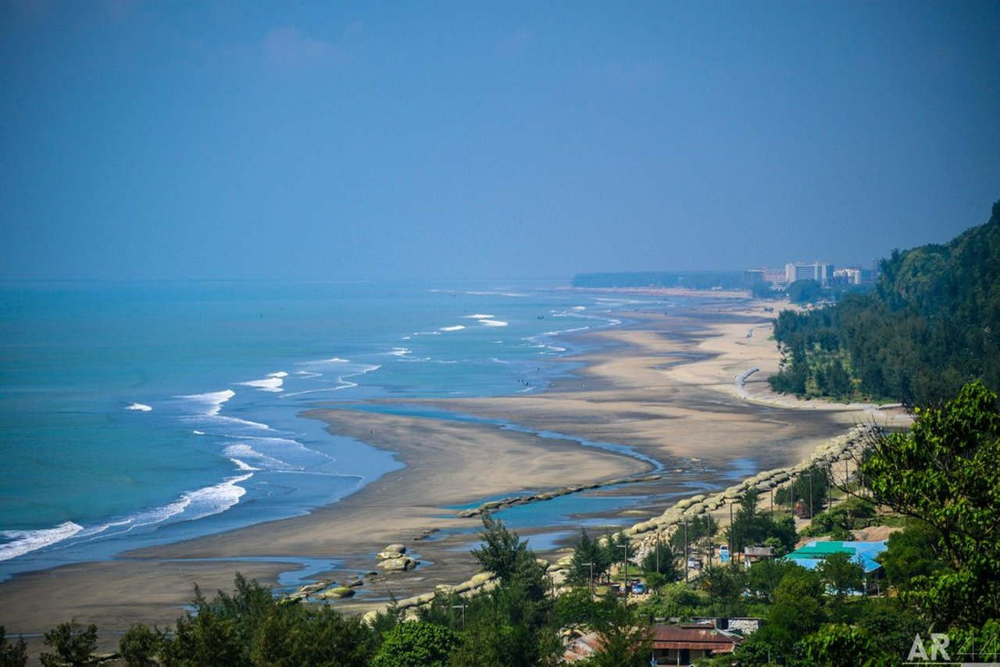

Cox's Bazar is a beautiful coastal town in Bangladesh, famous for its long sandy beach, which is one of the longest in the world. The town offers stunning views of the Bay of Bengal, and visitors can enjoy activities such as swimming, sunbathing, and exploring the local culture. The natural beauty and serene environment make Cox's Bazar a popular destination for both domestic and international tourists.